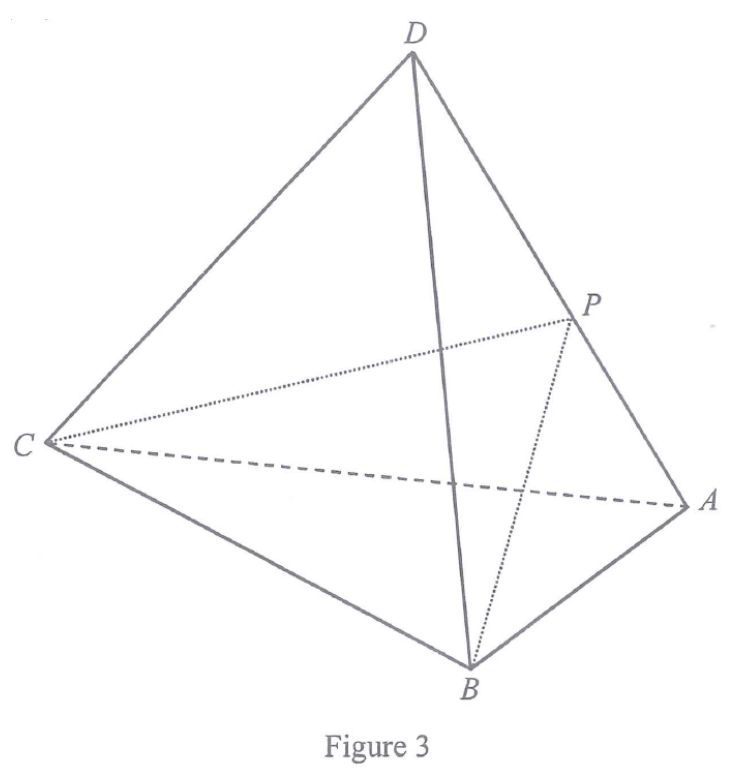

Figure 3 shows a tetrahedron \(ABCD\). Let \(P\) be a point lying on \(AD\) such that
\(BP\) is perpendicular to \(AD\). A craftsman finds that
\(AC=AD=CD=13\text{ cm}\), \(BC=8\text{ cm}\), \(BD=12\text{ cm}\) and \(\angle ABD=72^\circ\).
(a) Find
\(\angle BAD\),
\(CP\). [5 marks]
(b) The craftsman claims that \(\angle BPC\) is the angle between the face \(ABD\) and
the face \(ACD\). Is the claim correct? Explain your answer. [2 marks]

Figure (original exam diagram)
Step 1 · Set up △ABD
Consider triangle \(ABD\). We know \(BD=12\), \(\angle ABD=72^\circ\) and, since
\(AD=13\), we have \(AD=13\).
To use the sine formula we first need the angle opposite \(BD\), i.e. \(\angle BAD\),
but \(AD\) is the side opposite \(\angle ABD\). Use:
This is a good target: one unknown angle, one known side pair.
First obtain \(AB\) by the cosine formula (Step 2), then use the sine formula for \(\angle BAD\).
Step 2 · Find \(\angle BAD\) by the sine formula
Sine Formula\(\dfrac{a}{\sin A}=\dfrac{b}{\sin B}\)\(BD=12\) is opposite \(\angle BAD\) and \(AD=13\) is opposite \(72^{\circ}\), so \(\sin\angle BAD\approx 0.879\).
Apply the sine formula with \(BD=12\), \(AD=13\), \(\angle ABD=72^\circ\):
So \(\angle BAD\approx 61.38986936^\circ\) or \(180^\circ-61.38986936^\circ=118.6101306^\circ\).
In \(\triangle ABD\), the remaining angle is \(\angle ADB=180^\circ-72^\circ-\angle BAD\approx 46.61^\circ>0\),
so the obtuse solution is rejected (it would make \(\angle ADB<0\) together with \(72^\circ\)).
\(\angle BAD\approx 61.4^\circ\) (to 1 d.p.)
Step 3 · Find \(AP\)
We now have all angles of \(\triangle ABD\): \(\angle ABD=72^\circ\), \(\angle BAD\approx 61.3899^\circ\),
so
Converse of Pythagoras' Theorem\(a^{2}+b^{2}=c^{2}\iff\text{the angle opposite } c \text{ is } 90^{\circ}\)Here \(AP^{2}+CP^{2}\approx 152.4\neq AC^{2}=169\), so \(\angle APC\) is not a right angle.
The angle between the two faces \(ABD\) and \(ACD\) lies along their common edge \(AD\).
It is the angle between two lines drawn in each face perpendicular to \(AD\) at a common point.
We are told \(BP\perp AD\), so the relevant perpendicular in face \(ABD\) is \(BP\) (meeting \(AD\) at \(P\)).
The angle between the faces is therefore \(\angle BPC\) only if \(CP\perp AD\), i.e. only if \(\angle APC=90^\circ\).
Test with the converse of Pythagoras in \(\triangle ACP\):
Since \(AP^2+CP^2\neq AC^2\), \(\angle APC\) is not a right angle.
Step 7 · Conclusion for (b)
Because \(\angle APC\neq 90^\circ\), the line \(CP\) is not perpendicular to \(AD\). Hence \(\angle BPC\)
is not the angle between the planes \(ABD\) and \(ACD\).
Answer: The claim is not correct.
\(\angle BPC\) is merely the angle between \(BP\) and \(CP\); it is not the angle between
the faces \(ABD\) and \(ACD\) because \(CP\) is not perpendicular to the common edge \(AD\).
Rule to remember: the angle between two planes is the angle between lines drawn in each plane
perpendicular to the line of intersection at the same point. Here \(BP\perp AD\) but \(CP\not\perp AD\).
PRACTICESimilar question — try it yourself
Question. In the figure, \(BD=10\), \(AD=13\), \(\angle ABD=65^{\circ}\), and \(BP\perp AD\) with \(P\) on \(AD\). Triangle \(ACD\) is equilateral. (a) Find \(\angle BAD\). (b) Find \(AP\). (c) Find \(CP\).
Show the worked solution
Step 1. (a) By the sine formula, \(\dfrac{\sin\angle BAD}{10}=\dfrac{\sin 65^{\circ}}{13}\), so \(\sin\angle BAD\approx 0.6972\) and \(\angle BAD\approx 44.2^{\circ}\).
Step 2. The obtuse value \(180^{\circ}-44.2^{\circ}=135.8^{\circ}\) is rejected because \(135.8^{\circ}+65^{\circ}>180^{\circ}\).
Step 3. \(\angle ADB=180^{\circ}-65^{\circ}-44.2^{\circ}=70.8^{\circ}\), so \(DP=10\cos 70.8^{\circ}\approx 3.29\).